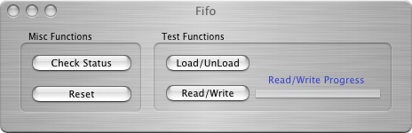

This IP card provides FIFO buffered data transfer capability between the carrier and an external device. This object was created early in the development cycle of ORCA to test certain internal framework designs and is currently used only for testing purposes. Perhaps some future version of ORCA will develop this card more fully. The card can only be placed into an IP Carrier board and the configuration icon looks like this:
The dialog is self explanatory:
